Bulgarian Icons in Wikidata and EDM
Vladimir Alexiev, Plamen Tarkalanov, Nikola Georgiev: Ontotext
CLADA BG project meeting, Plovdiv Library, 2020-07-02
Overview
Wikidata and GLAM
- Wikidata is one of the most important LOD datasets for GLAM
- It is also a Knowledge Graph platform for integrating and leveraging GLAM data
- Wikidata Strategy 2019 includes 3 parts, of which “Wikidata as a platform” is strongly GLAM-oriented
- Very strong GLAM Wiki outreach including:
- Case studies on sharing Digital Collections including Documenting 3D objects, Documenting living traditions, Digitization workflows, Enriching digitized content, Sharing and integrating digitized content
- Advice on Sharing Knowledge: Editathons, Workshops, Backstage Events, GLAM professionals contributing, Embedded Wikimedians, Online editing campaigns, Wikidata and institutional metadata, Embedding Wikimedia Content, GLAM + Education
- Numerous GLAM projects realized, including Bulgarian State Archives case study
- Wikipedian in Residence with institutions like British Library, Wales National Library, Europeana, etc etc
Wikidata Project Visual Arts
Wikidata:WikiProject Visual arts (former name Sum of All Paintings): - paintings: 451k (query) - paintings and subclasses thereof: 467k (query)
Defined very rich metadata for various CH objects (Item structure)
- eg “depicts Iconclass notation: 71H712”
Leads to a detailed description and classification using an Iconographic notation (in this case a typical Biblical situation)
- 71H71 David, from the roof (or balcony) of his palace, sees Bathsheba bathing
- 71H712 Bathsheba attended by servant(s)
- Bathsheba · David · Old Testament · Samuel-2 11-12 · balcony · bathing · bible · love at first sight · maidservant · palace · roof · spying
- 71H712 Bathsheba attended by servant(s)
Example Painting
- Example: Batsheba (in Reasonator)

Icons: Current Status
- Only 623 icons on wikidata as of 3-Feb-2020: tweet
- 268 (43%) with image, 355 (47%) without: query
- 33% have no author, 46% is “anonymous”, 20% are “noname” Masters, Nikolaos_Tsafouris and Nikolaos_Zafouris should be merged on Commons: query
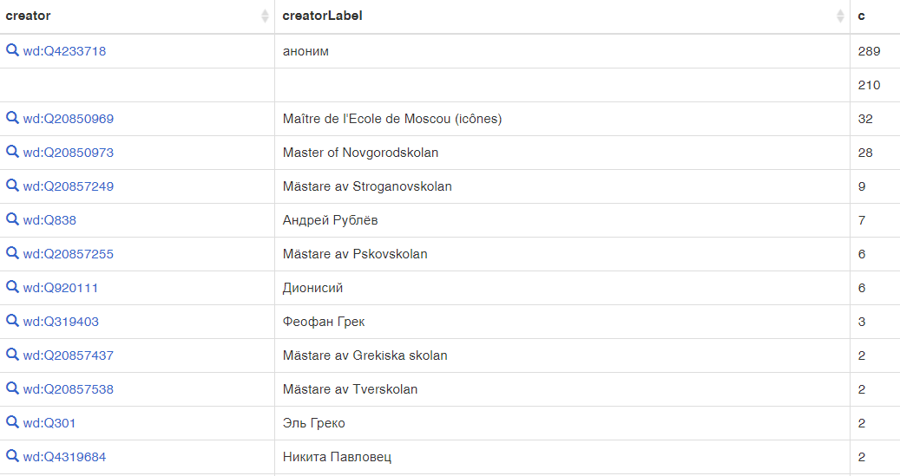
Icons with Images (query)
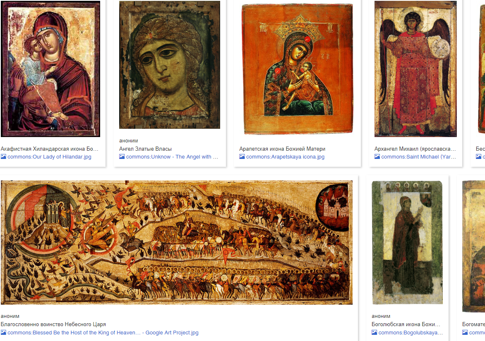
Icon Class, Props (SQID Q132137)
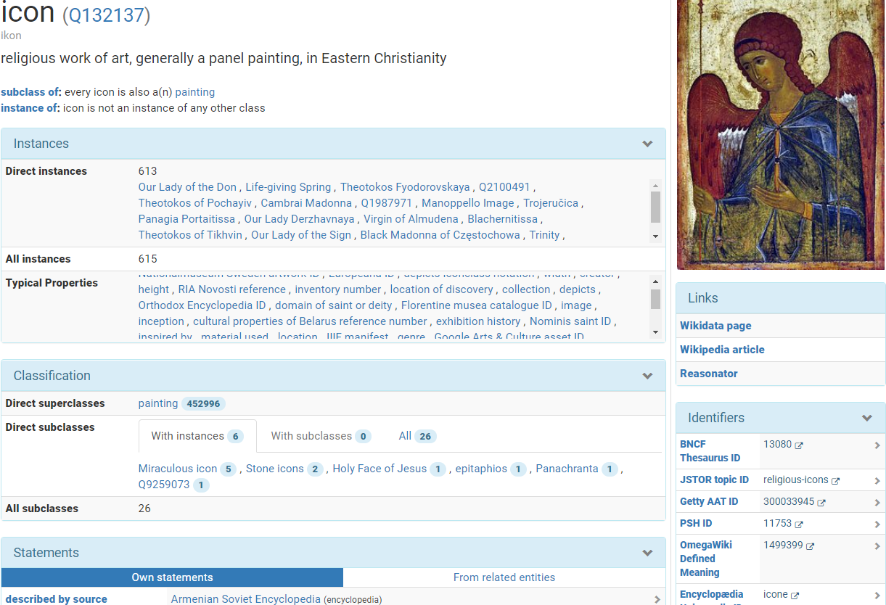
Semantic Data Integration
- Dataset research, Data analysis
- Data cleaning
- Know Wikidata semantic model, propose new props if needed
- Data mapping/conversion (ETL)
- Coreferencing/matching/reconciliation: one of the most important steps
- Match data instances across multiple datasets that refer to the same real-world entity
- Fuzzy name matching (various algorithms), extra features, use machine learning for tuning weights
- Reconciliation: matching tabular data (“strings”) to a KG (“things”)
- Data fusion: Gather attributes across datasets; select or aggregate
- Semantic text/metadata enrichment
- Data enrichment, inference, aggregation
- Sample queries; Semantic search, apps, visualizations
Wikidata Mix-n-Match
Mix-n-Match: global authority control. As of 2-Jul-2020:
- 5181
external-idprops that link to authority control databases (query) - 1627 with Mix-n-Match catalog (query)
- 3554 without Mix-n-Match catalog (but easy to import/web-scrape)
Icon-related catalogs:
- Iconclass, a multilingual classification system for cultural content (39.5k, 3.7k matched)
- Getty Iconography Authority by Getty Research Institute (1.2k, 915 matched)
- Iconografía Hispana Biblioteca Digital Hispánica (BDH)
- Brasiliana Iconográfica ID identifier for an artwork, in this database
- Trinidad and Tobago Icons National Institute of Higher Education, Research, Science and Technology (NIHERST)
Mix-n-Match: Iconclass and Getty IA
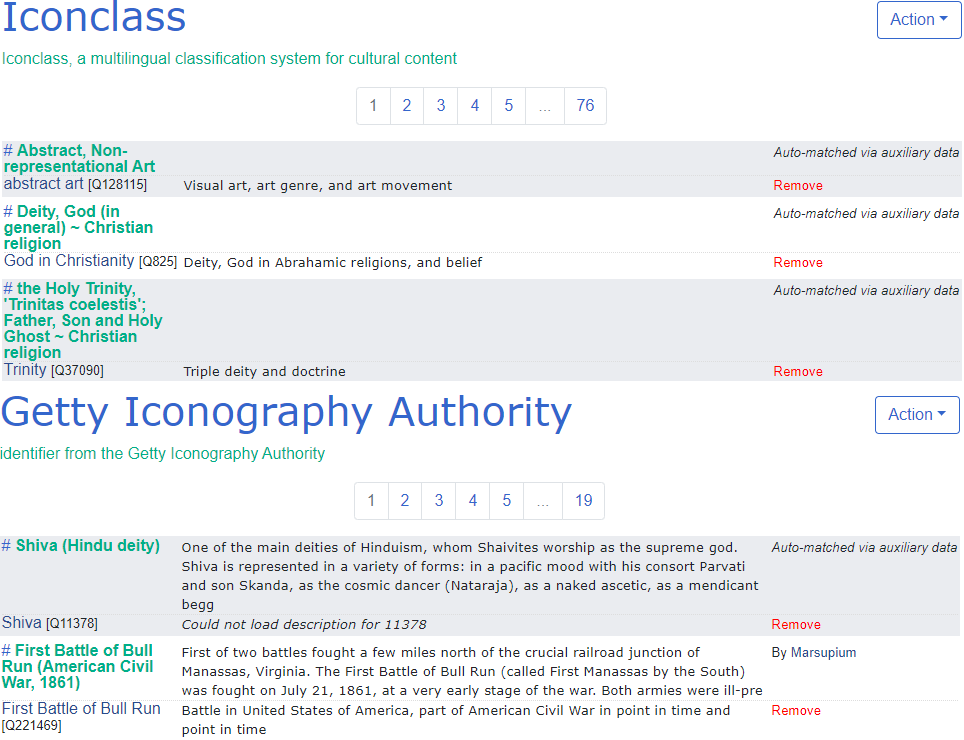
Mix-n-Match: Corefs of Lucas Cranach
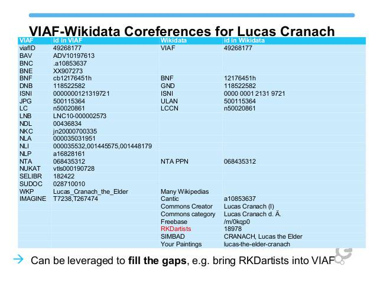
OpenRefine Reconciliation
Reconciliation allows you to map strings to things.
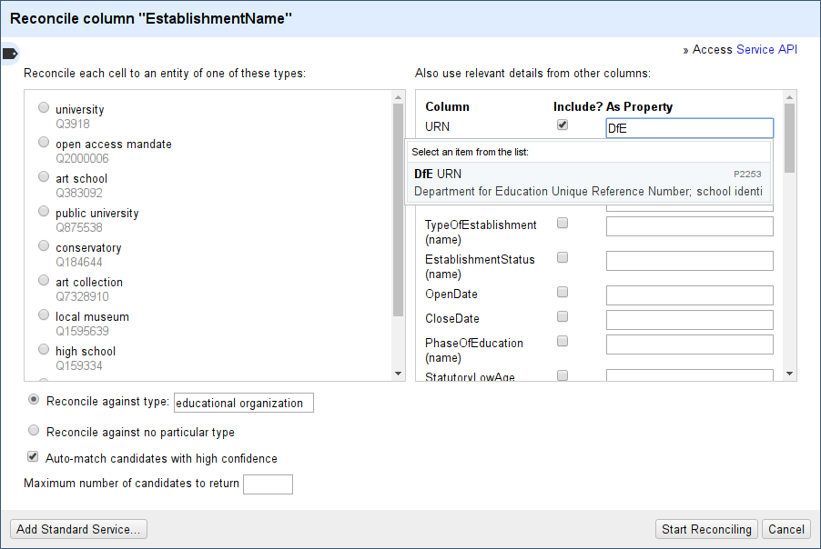
OpenRefine Recon: Wikidata and VIAF
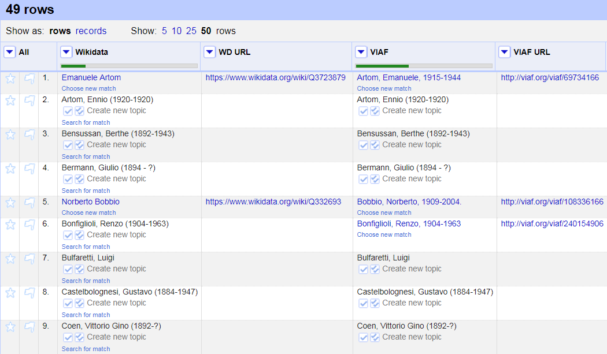
Icon Knowledge Graph Model
Made with rdfpuml: icon-KG.ttl -> icon-KG.png (control-click for full-screen)
{kind=link}
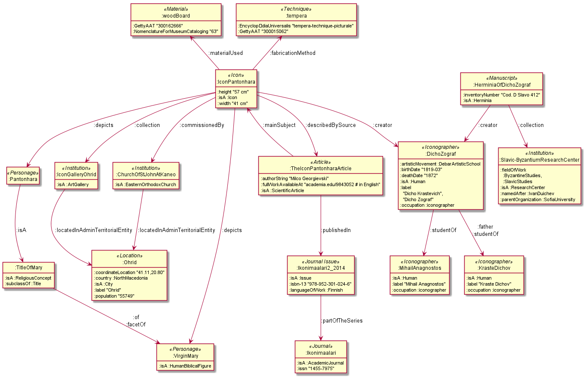
Adding Icon Concepts
- Icons involve many specific concepts for techniques, materials, subjects, and iconography (religuous subjects)
- These are described in “ерминии” (herminia, WD Q3408234) which are “How to Guides” for icon painters
- We should deepen Getty AAT and WD with Bulgarian/Balkan-specific icon and ethnographic concepts
Example:
- Getty has only AAT 300239260 “belt buckle”
- Wikidata has more detail and is easier to add to than Getty.
- Wikidata has WD Q25457974 “Пафти”: I added “subclass of: belt buckle”, image
- Commons: Belogradchik-hitorical-museum-19century-belt-buckle-14.jpg:
- Added Structured metadata: depicts: pafta; location: Belogradchik History Museum
{kind=link}
Iconographer: Dicho Zograf
- One of most prolific iconographers: worked in tens of places, his icons are in hundreds of churches, and he made 2-10 thousands of icons.
- He also left 2 handwritten herminias (Ерминия: icon creation guide)
- His family tree is shown
- His work and legacy spanned 3 Balkan countries (BG, MK and SR: each claim him for their own):
- He is Bulgarian: Дичо Зограф on bgwiki. Български иконописец, виден представител на Дебърската художествена школа.
- He is Macedonian: Дичо Зограф on mkwiki. Годишно работел по околу педесет големи дела. Во нашите краишта го донел барокот кој доаѓал преку Света Гора и Солун, преку македонските мијачки зографи и резбари кои го учеле занаетот во манастирот “Зограф” на Атос.
- He is Serbian: Димитар Крстевић on srwiki. Био је иконописац и представник дебарске уметничке школе.
Dicho Zograf’s Icons
- The bgwiki article shows maybe 30 of his icons.
- Wikimedia commons has 56 of Dicho Zograf’s icons/paintings, CC Zero license
- This is less than 2% of his total works.
- But it’s still significant: if we guesstimate 100 iconographers on WD and assume the average is twice less, that makes 2800 icons with cleared rights across Commons.
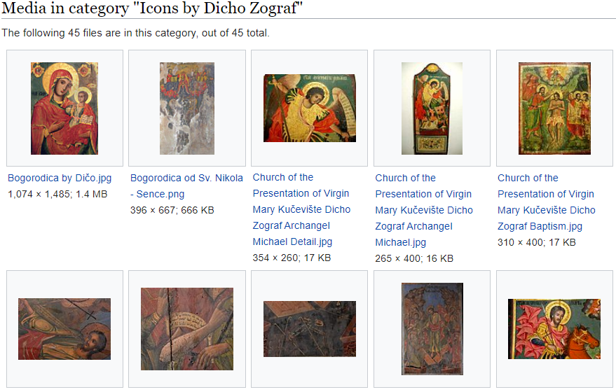
Info on Commons Metadata and Wikidata
- The info about an icon on Commons is poor: author, date; title and place are embedded in the filename and cannot be extracted easily.
- The Structured Info (see second tab), eg Depicted, is empty.
- I would guess that none if these icons have a WD record.
- Dicho Zograf’s WD item Q12278833 and Commons Creator page are also poor:
- Birth/death date/place and a bunch of identifiers, and links to Wikipedia pages, that’s all
{kind=link}
Enriched WD Q12278833 Dicho Zograf from bgwiki Дичо Зограф (added “!”):
- Дебърска художествена школа! (listed as “Macedonian carving” subclass of carving; I added class “painting movement”)
- баща: зограф Кръсте Дичов Перков!
- учи се при: зографа Кръсте Дичов Перков!, а после при зографите Михаил Анагност! от Самарина! и сина му Димитър! (Михайлов).
- ерминията на Дичо Зограф: Q84082005 Herminia of Dicho Zograf
- collection Q84082027 Slavic-Byzantium Research Center “Prof. Ivan Duichev”, inventory number “Cod. D. Slavo 412”
Editing Data About an Icon
- Първото дело на Дичо Зограф - Q84296272 Света Богородица Пантонхара, 1844
- от „Свети Йоан Богослов Канео“! (commissioned by)
- днес в Охридската галерия за икони! (collection)
- physical description: темпера, гипсен грунд на дъска, 57 х 41 х 4 cm
- described in article Q84291564 The icon of the Mother of God Pantonhara in the Icon Gallery, an article by Milco Georgievski
- published on 26 October 2014 in Q84298592 Ikonimaalari 2/2014 (ISBN 978-952-301-024-6)
- Which is an issue of the Finnish journal on icons Q84298370 Ikonimaalari (ISSN 1455-7975)
- English edition at academia.edu paper 9843052 The icon of the Mother of God Pantonhara in the Icon Gallery
- proposed Wikidata prop academia.edu work id so we can link to academia.edu (in this case, it’s the only source for that rare article)
- published on 26 October 2014 in Q84298592 Ikonimaalari 2/2014 (ISBN 978-952-301-024-6)
Iconographer: Dicho Zograf (Q12278833)
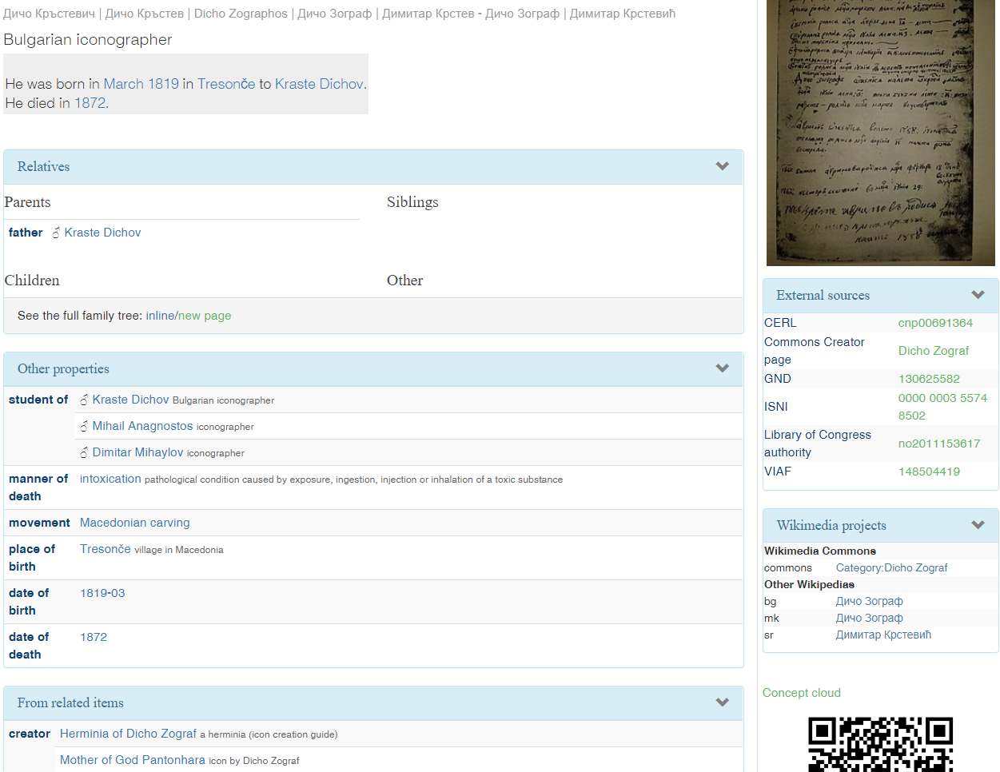
Multilingual: BG vs EN (Q12278833)
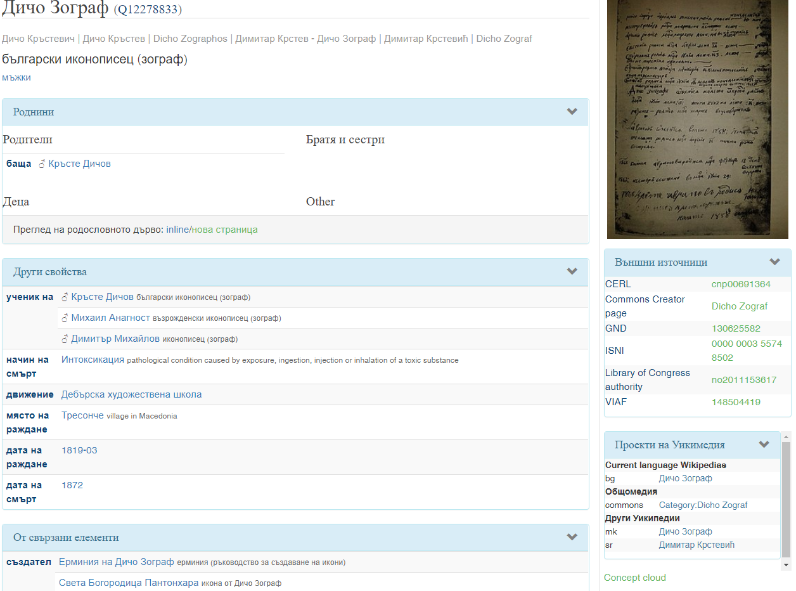
Work: Herminia (12278833)
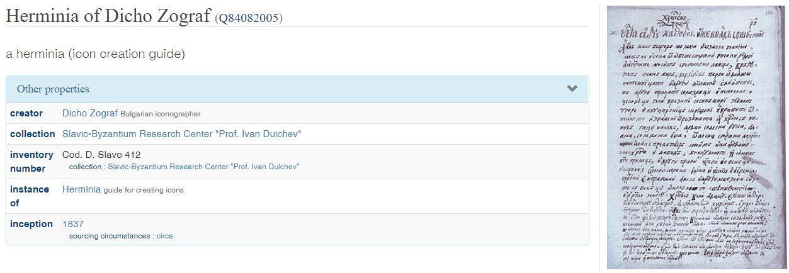
Institution: Ivan Duichev Center (84082027)
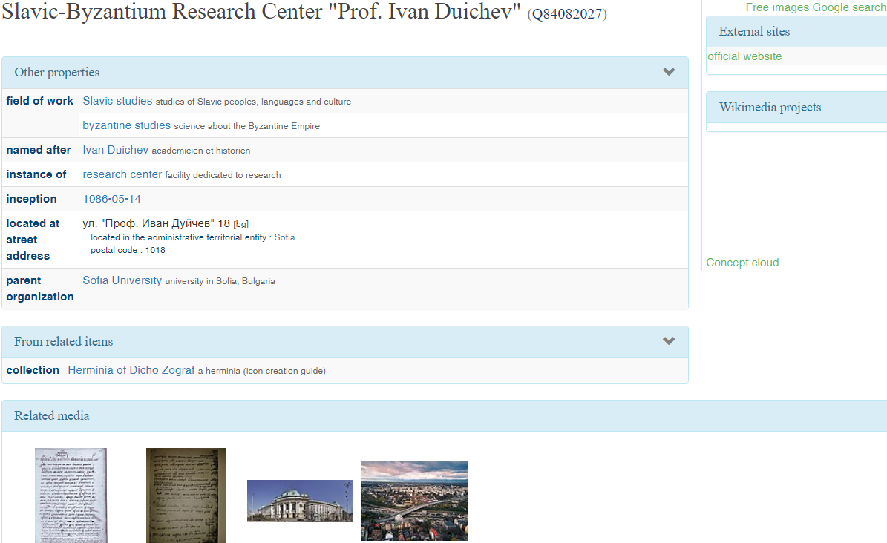
Icon: Mother of God Pantonhara (Q84296272)
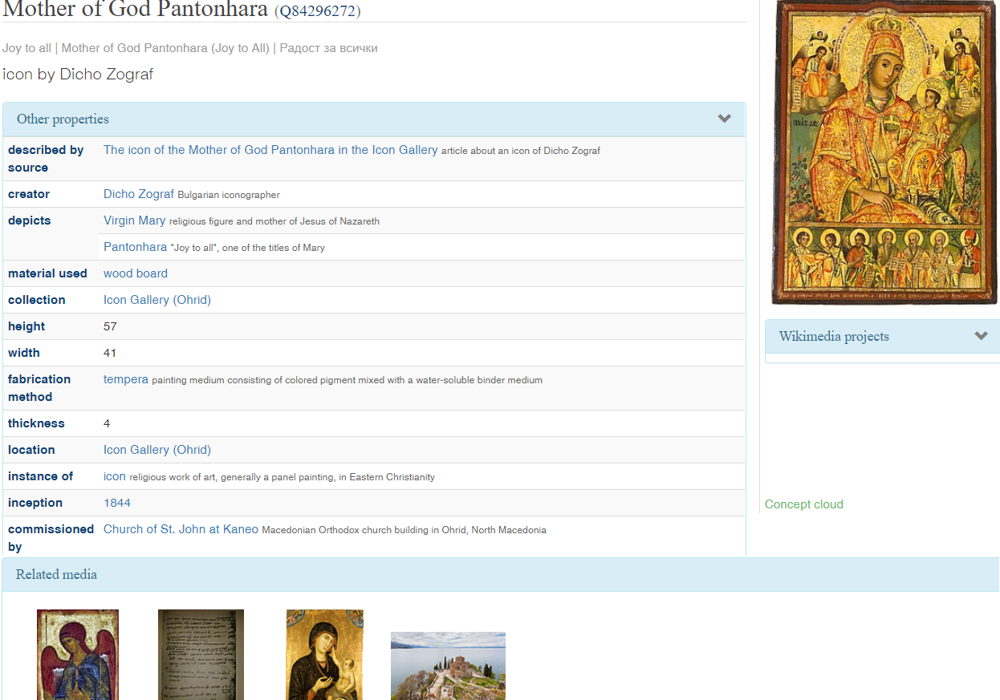
Iconographic Subject: Pantonhara (Q84306742)
- This is one of 282 titles of Mary (designation for Mary, mother of Jesus Christ)

Iconography: Added 7 Saints in Order
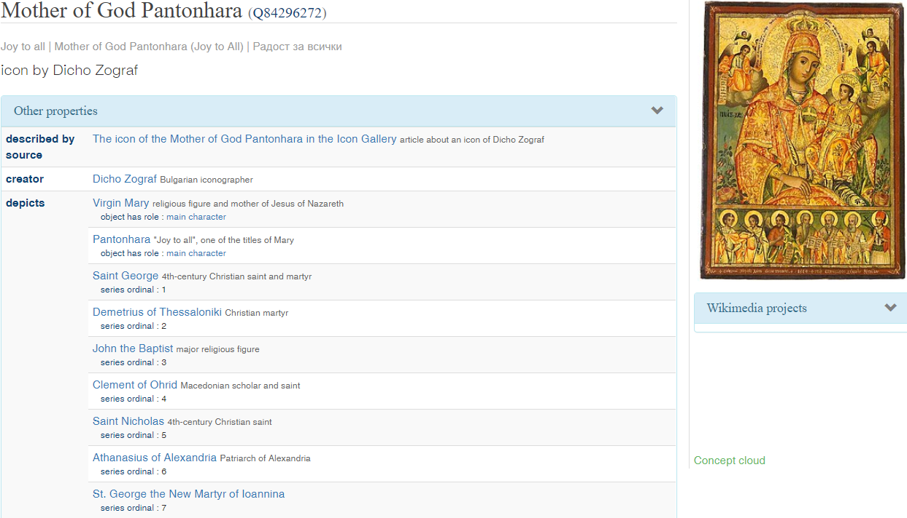
Added Saints
Mother and father of St George: Polychronia (Polifrona) and Gerontius, with references
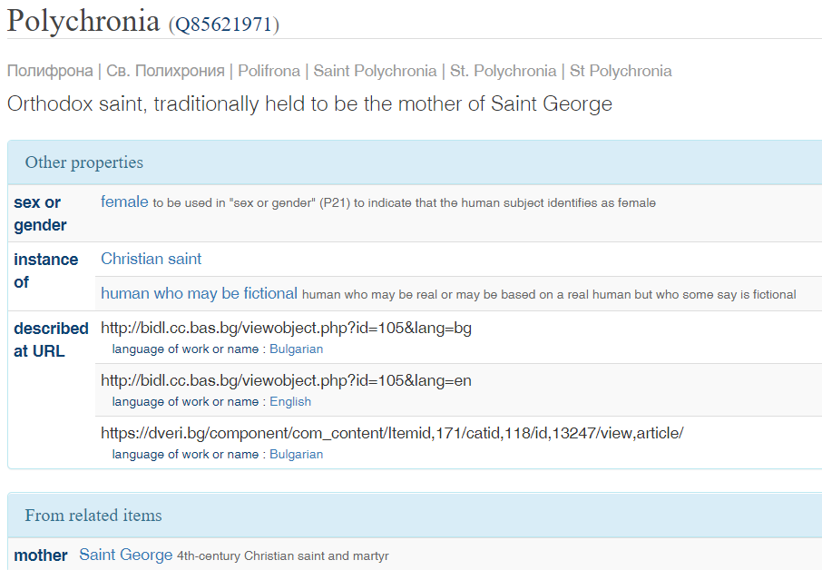
Added Names of Virgin Mary
Platitera (Q84986979): Platytera; Wider than Heavens, More Spacious than the Heavens; Св. Богородица Ширшая небес, По-широка от небесата
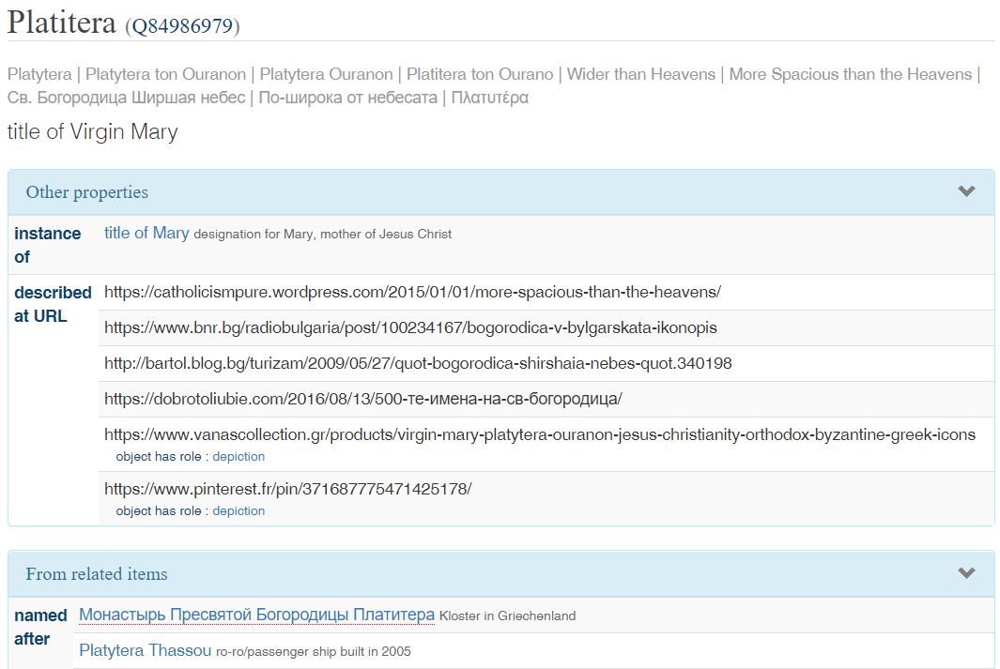
Saints: Added Bulgarian Descriptions
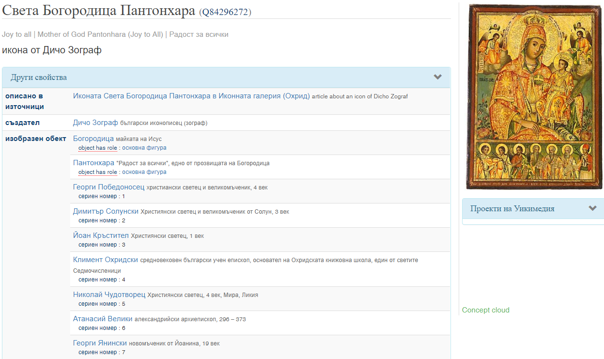
Seven Slavic Saints: Added Membership
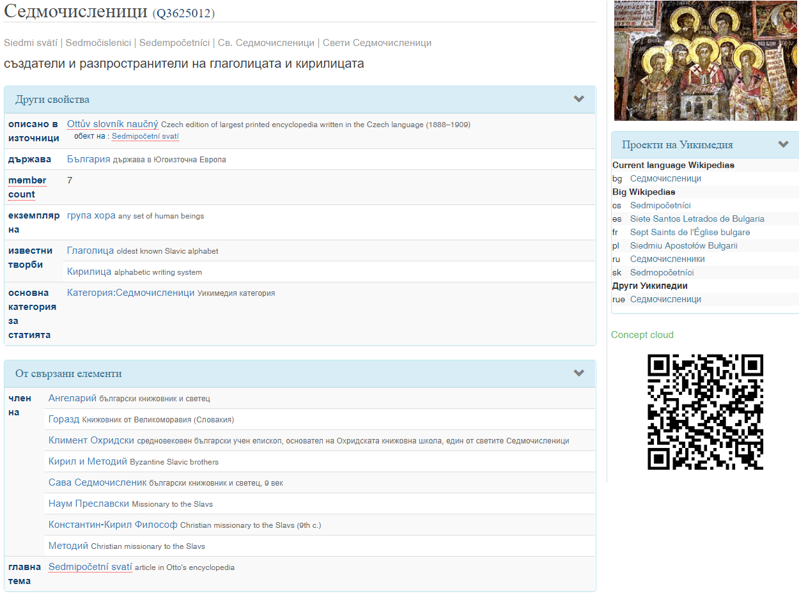
Church (Commissioned by) (Q164664)
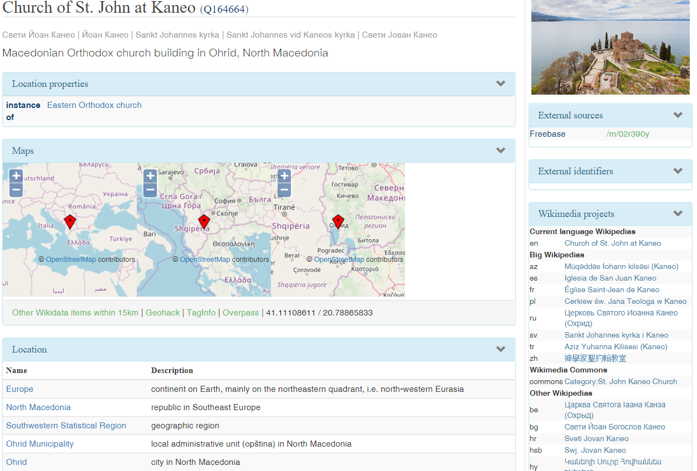
Article (Described by source) (Q84291564)
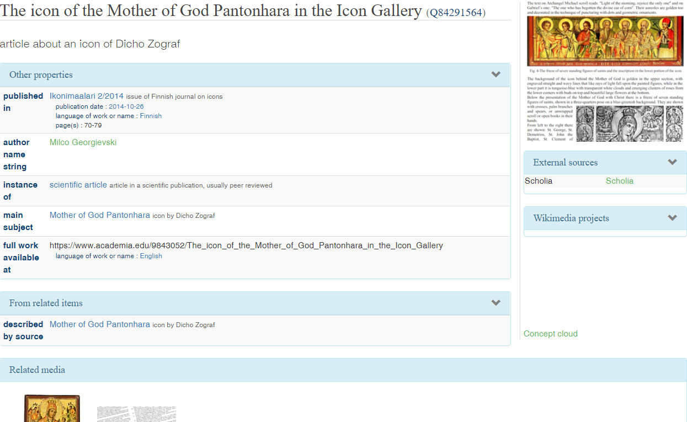
Journal Issue (Published in) (Q84298592)
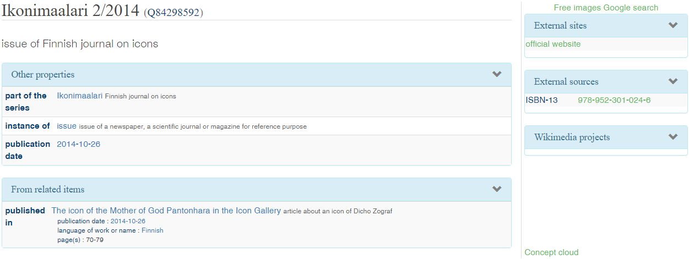
Journal (Part of the series) (Q84298370)
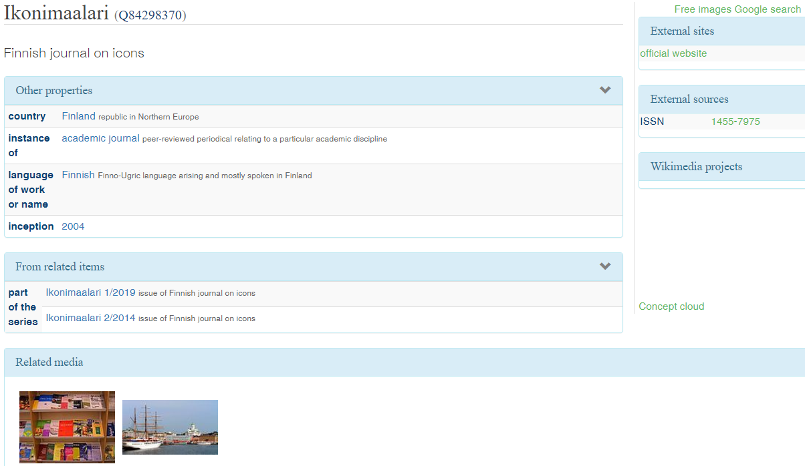
Bulgarian Icons
Virtual Encyclopedia of Bulgarian Icons
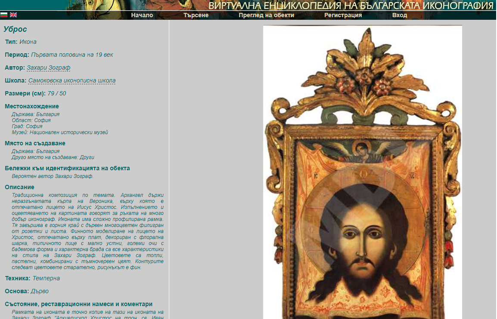
BIDL Data
- Got 308 objects, custom XML
- However, don’t have copyright clearance for the images
- This is unfortunate because Wikidata images use Wikimedia Commons, for centralized management
- Such images are very important in most visual applications
- There are many images of Balkan icons already in Commons
- The project Structured Data on Commons makes it easy for GLAM to describe CH images, using a Wikidata approach and linking to Wikidata for creator, location, depicted elements, etc
- Commons also supports DeepZoom (incl. GigaPixel), eg see Montserrat Casas de Nieto, in Evening Dress
{kind=link}
BIDL Schema
Deduced schema: about 60 elements:
#<?xml version="1.0" encoding="utf-8"?>
#<xml>
<object id="\d+">
<characteristics>
Идентификация
Заглавие:bg:en
Тип на иконографския обект
(Икона|Мозайка)
друг:bg:en
Пластичен обект
друг:bg:en
Автор:bg:en
Биография на автора:bg:en
Иконографски род:bg:en
Иконописна школа:bg:en
Период
От
(Година|Век)
(начало|среда|край|първа половина|втора половина)
До
(Година|Век)
(Месец|Ден)
(начало|среда|край|първа половина|втора половина)
Размери \(см\)
височина
ширина
дебелина
Местонахождение
Държава:bg:en
Област:bg:en
(Град|Село):bg:en
(Галерия|Музей|Частна колекция):bg:en
Частна колекция
Друго местонахождение:bg:en
Място на създаване
Държава:bg:en
Област:bg:en
(Град|Село):bg:en
(Манастир|Църква|Параклис):bg:en
Църква
Друго място на създаване:bg:en
Бележки към идентификацията на обекта:bg:en
Описание
Персонажи
( Име на персонаж:bg:en
( Каноничен тип на персонаж:bg:en\n)?)*
Иконографски сцени
Иконографска сцена:bg:en
Присъстващ персонаж в сцена(:bg:en)+
Описание на обекта:bg(:en)?
Технология
Иконографска техника:bg:en
Описание на техниката:bg:en
Основа:bg:en
Описание на основата:bg(:en)?
Състояние, реставрационни намеси и коментари((:bg)?:en)?
Файлове
<files>
<fileBIDL Authorities
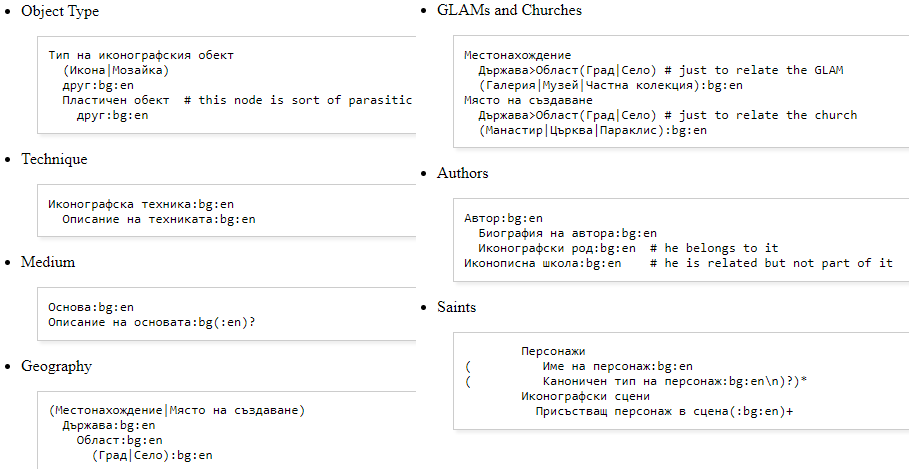
BIDL Authority Mapping
- Lots of nested well-structured info, eg “Местонахождение> Държава> Област> Село> Манастир”
- Has to be flattened out for Europeana, eg concatenated to a single field
dct:spatial
- Has to be flattened out for Europeana, eg concatenated to a single field
- Great opportunity for semantic enrichment, see highlights below.
- Donated about 1395 to the Poganovo monastery by Empress Elena Paleologus, daughter of the monastery’s sposor Despot Deyan and granddaughter of Tsar Ivan Alexander.
- Dimiter T. Molerov, born in 1780 in Bansko, son of Toma Vishanov the Moler. One of the best-known painters, a representative of the Bansko school of art, a disciple of his father, influenced by the art of Athos. Author of the murals of the naos in the St Archangels’ paraclete (параклис) in the Rila monastery, the murals in the Church of the Assumption of the Virgin in the Pchelino dependance (метох)
- Mapped to Wikidata:
- Iconographic object type (instance of): WD and AAT
- Personages/saints (depicts)
- Iconographers (creator)
- Iconographic schools (artistic movement)
- Location of creation (comissioned by), current location
OpenRefine: Reconcile Personages
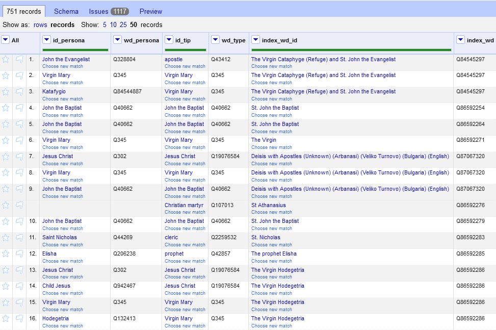
OpenRefine: Reconcile Iconographers
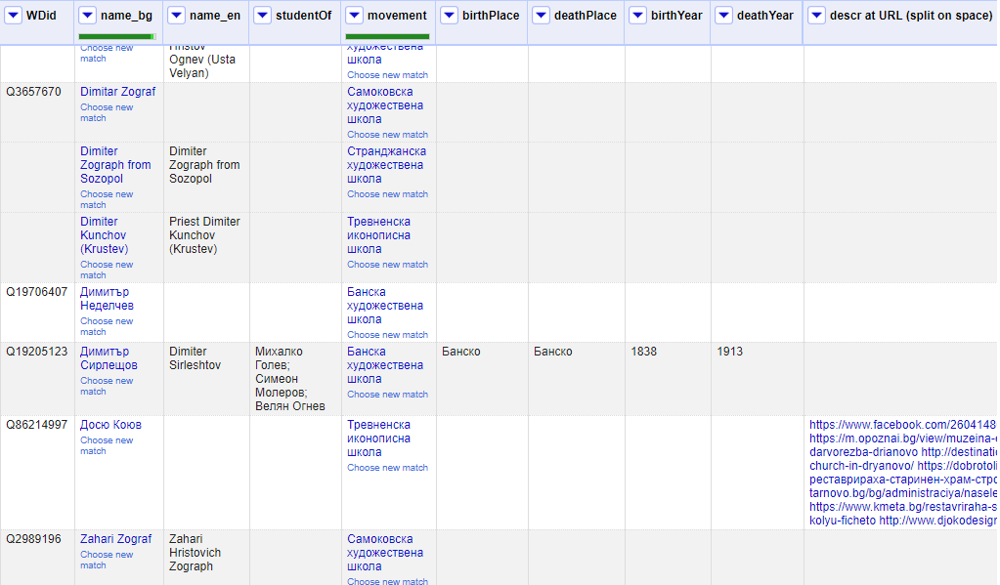
OpenRefine: Reconcile Locations
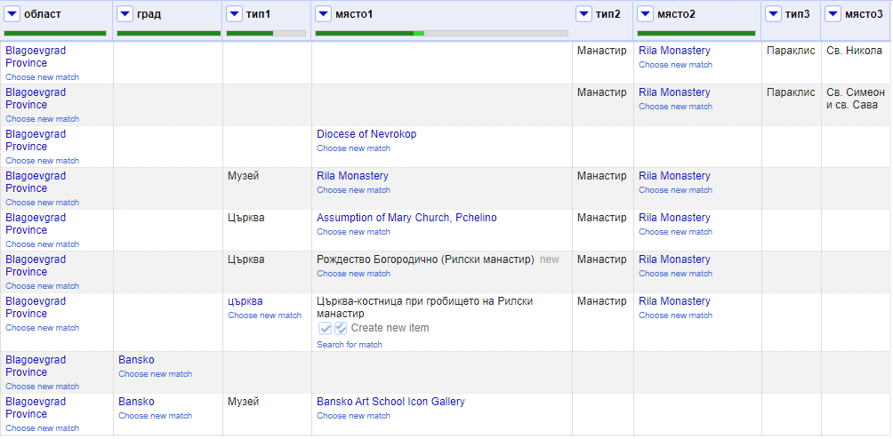
OpenRefine: Mapping Icons to Wikidata
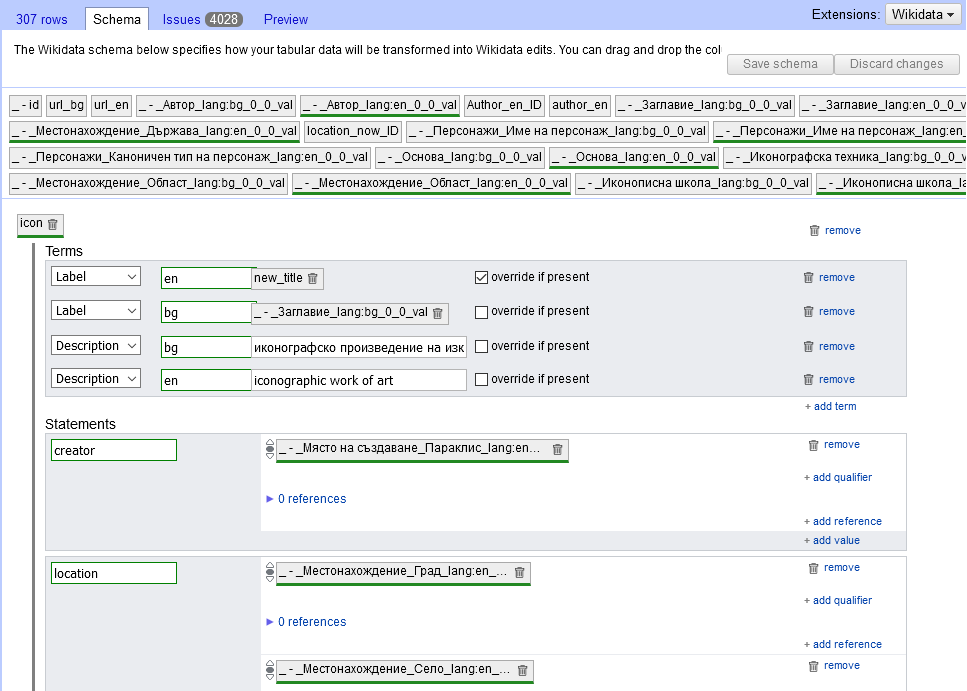
Only a small part is shown
Mapping BIDL to Wikidata: Results
- OpenRefine was used to reconcile BIDL authorities to Wikidata
- OpenRefine Wikidata schema was used to map the data
- The mapped data was exported as QuickStatements and added to Wikidata
- Saints and iconographers were added semi-automatically
- All 308 icons are in WD according to the KG model (but we don’t have data about publications)
Sample Wikidata Queries
WD Query: Depicted Subjects by Popularity
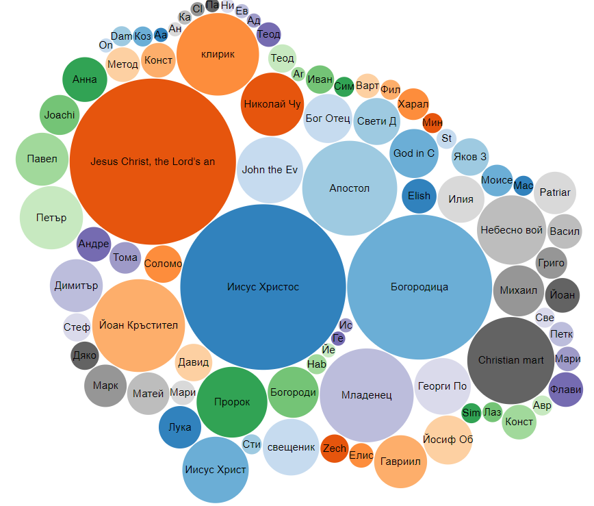
WD Query: Icons by Type
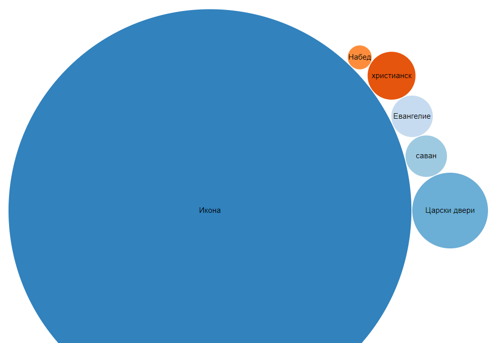
Queries Can Be Modified by Non-Experts
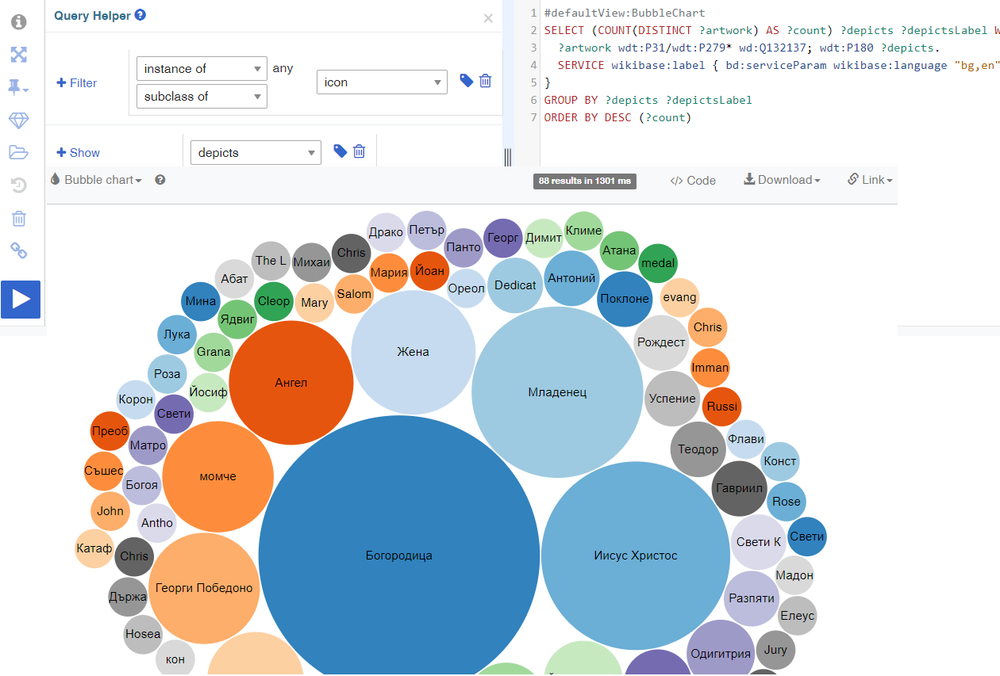
WD Query: Icons by Current Location
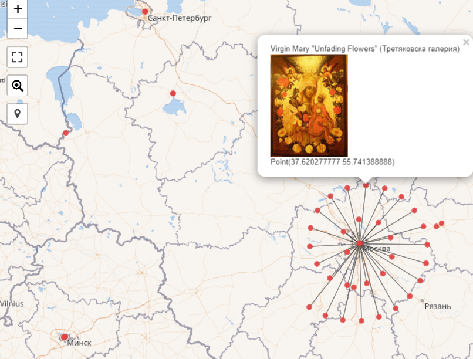
WD Query: Count by Location of Creation
We know the location and coordinates for 169 of 308 icons
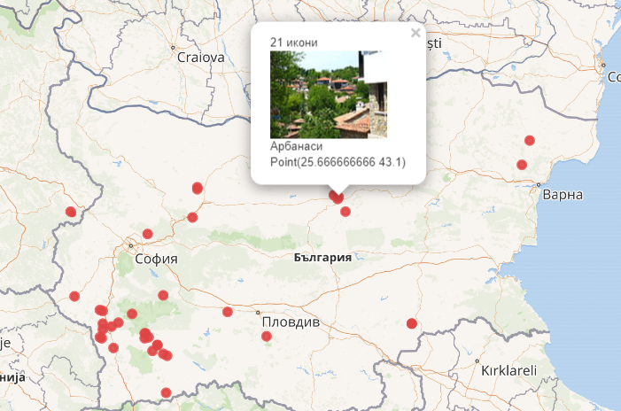
EDM Mapping
- Detailed and precise EDM mapping including bilingual data, lang tags, links to Wikidata.
- Implemented as a Python script using rdflib, ElementTree.
- Converts XML, adds Wikidata references from CSV.
EDM: CHO 1
CHO, Type, Title, Creator, Size, Date, Locations
<http://bidl.cc.bas.bg/viewobject.php?id=264&lang=bg> a edm:ProvidedCHO;
owl:sameAs wd:Q87103221;
edm:hasType wd:Q132137;
edm:type "IMAGE";
dc:identifier "264";
dc:title
"Преображение Господне"@bg,
"The Transfiguration of Jesus Christ"@en;
dc:type "Икона"@bg, wd:Q132137;
dc:creator
"Тома Вишанов-Молера"@bg, "Toma Vishanov-Molera"@en, wd:Q12296667,
"Банска иконописна школа"@bg, "Bansko Iconographic School"@en, wd:Q12272944;
dct:created "От край на 18 Век До начало на 19 Век"@bg;
dct:extent "30.5 x 22.5 x 2.3 cm";
edm:currentLocation
"Успение Богородично, Бобошево, Благоевград, България"@bg,
"The Assumption of the Virgin, Boboshevo, Blagoevgrad, Bulgaria"@en,
wd:Q12297283;
dct:provenance
"Успение Богородично, Бобошево, Благоевград, България"@bg,
"The Assumption of the Virgin, Boboshevo, Blagoevgrad, Bulgaria"@en,
wd:Q12297283;
dct:spatial
"Успение Богородично, Бобошево, Благоевград, България"@bg,
"The Assumption of the Virgin, Boboshevo, Blagoevgrad, Bulgaria"@en,
wd:Q12297283.EDM: CHO 2
Description, Subject, Medium, Part Of, Language
<http://bidl.cc.bas.bg/viewobject.php?id=264&lang=bg>
dc:description
"""В горната половина на композицията са изобразени: в центъра Христос в цял ръст
... старозаветните пророци Мойсей и Илия, седнали.
... вляво св. ап. Яков, клекнал и опрял ръце в земята; св. ап. Петър.."""@bg,
"""Pictured in the upper half of the composition are: in the center - Christ in full length..."""@en;
dc:subject
"Апостол"@bg, "Apostle"@en, wd:Q43412,
"Иисус Христос"@bg, "Jesus Christ"@en, wd:Q302,
"Преображение Господне"@bg, "The Transfiguration of Jesus Christ"@en,
"Пророк"@bg, "Prophet"@en, wd:Q42857,
"Св. Илия"@bg, "St. Elijah"@en, wd:Q133507,
"Св. Йоан Богослов"@bg, "St. John the Evangelist"@en, wd:Q328804,
"Св. Моисей"@bg, "St. Moses"@en, wd:Q9077,
"Св. Петър"@bg, "St. Peter"@en, wd:Q33923,
"Св. Яков"@bg, "St. James"@en, wd:Q43999;
dct:medium
"""Маслена/Дърво. Приложена е маслена живопис..."""@bg,
"""Oil/Wood. Oil painting, laid thinly on the ground coat..."""@en,
wd:Q56676227, wd:Q287;
dct:isPartOf
"Virtual encyclopaedia of Bulgarian iconography"@en,
"Виртуална енциклопедия на Българската иконография"@bg,
<http://bidl.cc.bas.bg/index.php?lang=bg>;
edm:rights <https://creativecommons.org/publicdomain/mark/1.0/>;
dc:language "bg", "en".EDM: Auxiliary Objects
Aggregation, Providers, Webpage, Image, License, Agent
<http://bidl.cc.bas.bg/viewobject.php?id=264&lang=bg#aggr> a ore:Aggregation;
edm:aggregatedCHO <http://bidl.cc.bas.bg/viewobject.php?id=264&lang=bg>;
edm:isShownAt <http://bidl.cc.bas.bg/viewobject.php?id=264&lang=bg>,
<http://bidl.cc.bas.bg/viewobject.php?id=264&lang=en>;
edm:isShownBy <http://bidl.cc.bas.bg/view/300-view.jpg>;
edm:dataProvider "Институт по математика и информатика, БАН";
edm:intermediateProvider "CLADA BG";
edm:provider "Bulgariana".
<http://bidl.cc.bas.bg/view/300-view.jpg> a edm:WebResource;
edm:rights <http://rightsstatements.org/vocab/InC/1.0/>.
wd:Q12296667 a edm:Agent;
skos:prefLabel "Тома Вишанов-Молера"@bg, "Toma Vishanov-Molera"@en;
dct:isPartOf
"Молеров"@bg, "Molerov"@en,
"Банска иконописна школа"@bg, "Bansko Iconographic School"@en, wd:Q12272944;
skos:note
"""Тома Вишанов-Молера – роден около 1750г., иконописец и стенописец,
основоположник на банската художествена школа. Израства в семейството на свещеника Вишан..."""@bg,
"""Toma Vishanov-Molera, born around 1750, painter of icons and murals,
founder of the Bansko school of art. He grew up in the family of the clergyman Vishan..."""@en.